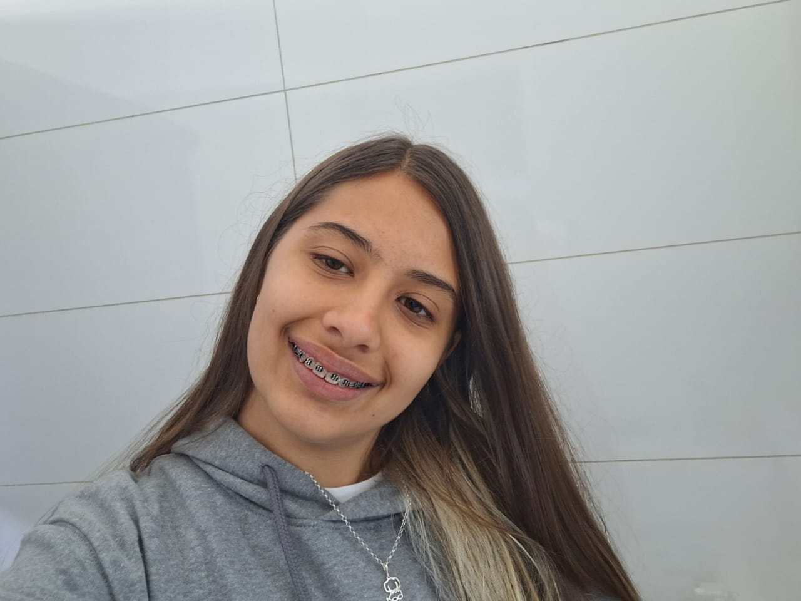
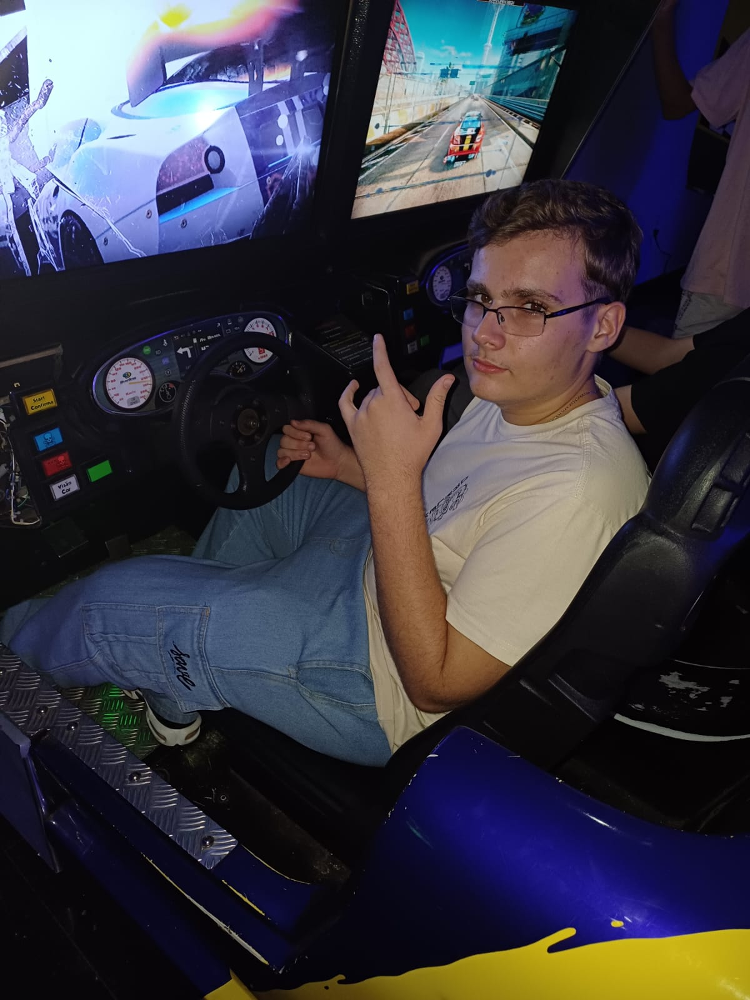
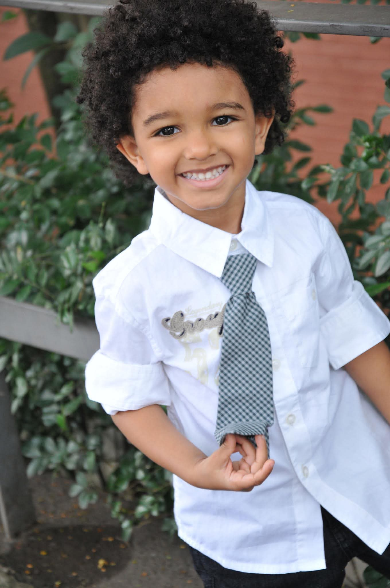
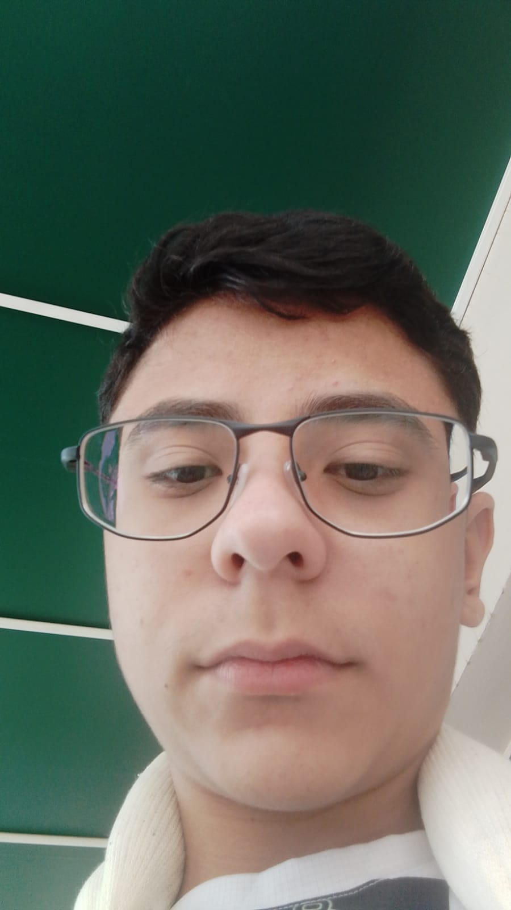
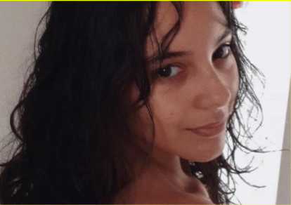

Beatriz Almeida Conceição
Fez o Figma do Dark e do Início, depois o HTML, JS e o CSS do Dark, que serviu de base para os outros tipos. Fez a página inicial e dos participantes.

Otávio Graziela Gersualdo
Fez o Figma da página de fada e iniciou a programação da página de fada. Depois passou mal e Mateus acabou finalizando.

Mateus Carvalho Lopes
Fez o Figma da página de Fantasma e fez o HMLT, JS e CSS da página de Fantasma e ajudou fazendo os outros tipos.

Lucas Octávio da Silva Castilho
Fez o Figma da página de Veneno e iniciou a programação da página de Veneno, mas quebrou o dedo no dia 08 e teve que ir embora.

Paola Rebeca Rubin Gusmava
Como tinha faltado nos dias anteriores e acabou ficando com a página dos participantes e iniciou a programação da página, porém nao conseguiu realizar o commit.